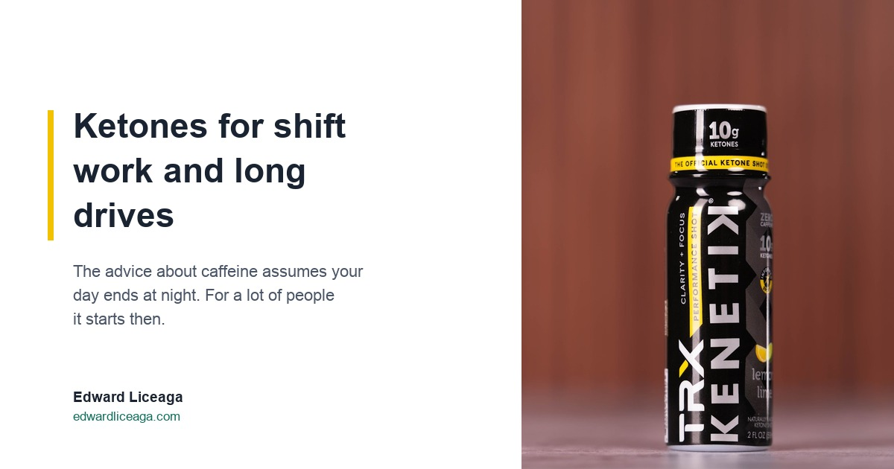

Ketones for Shift Work and Long Drives: The Hour Four Problem
The advice about caffeine assumes your day ends at night. For a lot of people it starts then, and the arithmetic runs differently.

The standard caffeine advice is one sentence long. Stop drinking it by early afternoon.
That is fine if you sleep at eleven and wake at seven. It is no help at all if your shift starts at ten at night, and it is no help at hour four of a drive with three hours still in front of it.
Bureau of Labor Statistics data for 2017 to 2018 put about 16 percent of wage and salary workers on something other than a regular daytime schedule, roughly 6 percent on evenings and 4 percent on nights. Add everyone who drives long distances for a living and the group is large, and almost entirely absent from the advice.
Why the usual advice does not transfer
Caffeine does not make energy. It blocks adenosine, a molecule that accumulates in your brain across the waking day and produces what you feel as sleep pressure. The molecule keeps building the whole time the block is up. Nothing gets removed. The message gets intercepted.
For a day worker the bill arrives at bedtime. Caffeine's half life averages around five hours, so an afternoon dose is still measurably present at midnight. I ran that arithmetic out in full in The Coffee You Drank at 3 PM Is Still Working at Midnight.
For a night worker the bill lands somewhere more expensive. Your sleep window is already working against your body clock. It is short, it sits at the wrong time of day, and it is the single thing holding the schedule together. Caffeine at 3 AM, which is the middle of a night shift and precisely when people reach for it, is the structural equivalent of a day worker drinking coffee at 3 PM. It lands on the back half of a sleep window that could not afford to give anything up.
The driver's version is different again, because the crash is not an inconvenience. The crash is the event.
The part where this stops being a productivity question
NHTSA puts drowsy driving at roughly 91,000 police reported crashes a year, about 50,000 injuries and around 800 deaths. Those are the ones an officer wrote down as drowsiness, and the agency treats its own number as an undercount.
A 2024 AAA Foundation for Traffic Safety study, working from in-vehicle video rather than police reports, estimated that 17.6 percent of fatal crashes between 2017 and 2021 involved a drowsy driver. That is roughly one in six, against the one to two percent the reports capture.
I am not going to attach a product to those numbers, and this is exactly the paragraph where you should expect somebody selling something to try. Nothing you drink makes it safe to drive tired. If you are fighting your own eyes on the highway, the answer is to stop the vehicle. That is the entire answer and there is no version of it that comes in a bottle.
What the numbers do establish is that the reach-for-a-stimulant-and-push habit is not a small optimisation problem in these two settings. Worth knowing before you decide what to reach for, and when.
What a ketone drink actually is
Disclosure before the mechanism: I sell this. Read the section accordingly.
Ketones are a fuel your body already makes. When glucose runs short your liver produces them from fat, and your brain uses them readily. A ketone drink supplies that fuel directly instead of blocking a tiredness signal.
That distinction is the whole reason ketones for shift work and long drives is a different conversation than caffeine. Nothing is intercepted, so nothing stacks up behind a block, so nothing is owed back later. There is no half life to run against your sleep window, because there is no stimulant in it to clear.
What it supports is clarity, focus, and cognitive endurance. That is the claim as stated and I am not going to stretch it past that. It is not a sleep replacement. It does not repay sleep debt. It does not make a tired driver safe.
Where it fits in practice
Two formats, and they do not share a label.
The can is 12 grams of ketones, 12 ounces, 60 calories. The TRX shot is a 2 ounce bottle at 10 grams. Both are caffeine free, sugar free, nothing artificial, and Informed Sport certified, which means an outside lab tests batches instead of the company grading its own homework. What that certification does and does not cover is in Informed Sport Certified: What Third Party Testing Actually Means.
For the two cases in this piece the shot is the practical one, for an unglamorous reason. It fits a glovebox, a lunch box, or a jacket pocket, and it does not need to be cold. Two ounces is something you can carry through a twelve hour shift without planning around it.
The honest way to use either format is as a replacement for the dose you would otherwise take late, not as an addition on top of it. If you work nights, the caffeine at 3 AM is the one taxing the sleep you are about to attempt. If you are driving, the coffee at hour four is the one setting up the dip at hour six.
The short version
Ketones for shift work and long drives is not a claim that a drink solves fatigue. It is a narrower point than that. The default tool for staying alert works by deferring a cost, and these are two settings where the cost lands somewhere you cannot afford it: on a sleep window that was already too short, or on the road two hours later.
A fuel defers nothing. That is all it is, and in these two cases that happens to be the useful part.
Sleep is still the answer. Pulling over is still the answer. This is about what you reach for in the hours before either one is available.
Caffeine free, sugar free. My link if you want to try it: https://drinkkenetik.com/EDDIEG, promo code EDDIEG.
I earn a commission on purchases through this link. This article is consumer information and is not medical advice.